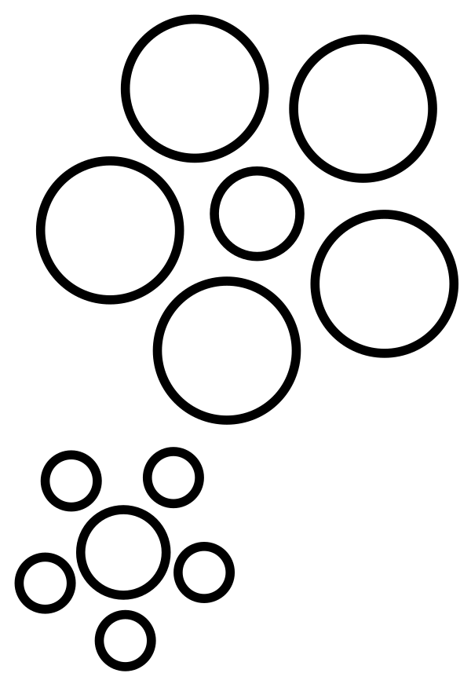

ဘာ့ကြောင့် ဒီလို မိုးကုတ်စက်ဝိုင်းနားက ထွက်ပြူစ လ က အရွယ်ပို ကြီးနေရတာလဲ ဆိုတာကို ရှေးခေတ် ကတဲက နက္ခတ် ပညာရှင်တွေ ဖြေရှင်းဖို့ ကြိုးစားခဲ့ ကြပါတယ်။ ဒါပေမယ့် အခုထိ ဘာ့ကြောင့် ဒီလို ဖြစ်ရတာလဲ ဆိုတာကို အဖြေ ပေးနိုင်ခြင်း မရှိကြ သေးပါဘူး။
မိုးကုတ်စက်ဝိုင်းနားက လက တကယ်ပဲ ကြီးနေသလား
ဒီနေရာမှာ မိုးကုတ် စက်ဝိုင်းနား ကပ်နေတဲ့ လဟာ တကယ်ပဲ အရွယ် ကြီးနေတာ ဟုတ်မဟုတ် ဆိုတာကို အရင် အတည်ပြုဖို့ လိုပါလိမ့်မယ်။ လရဲ့ ကမ္ဘာက အကွာအဝေးဟာ အမြဲတမ်း တသမတ်ထဲ မဟုတ်ပါဘူး။ ဒီလို ဖြစ်ရတာ ကလဲ လ ပတ်လမ်းက စက်ဝိုင်းပုံ တိတိကျကျ ဖြစ်မနေပဲ ဘဲဥပုံ ရှည်မြောမြောလေး ဖြစ်နေတာ ကြောင့်ပါ။ ဒါ့ကြောင့်လဲ ကမ္ဘာနဲ့ နီးတဲ့ ရက်တွေမှာ မြင်ရတဲ့ လ က အမြင်မှာ ကြီးနေပြီး ကမ္ဘာနဲ့ ဝေးတဲ့ အချိန်မှာ မြင်ရတဲ့ လက အရွယ် ငယ်နေပါတယ်။ဒါက အဲ့သည် ရက်မှာ လ နဲ့ ကမ္ဘာရဲ့ အကွာအဝေးကြောင့် ဖြစ်လာတဲ့ တကယ့် အတိုင်းအတာ ဖြစ်ပါတယ်။ ဒါပေမယ့် ကမ္ဘာနဲ့ လ နဲ့ အကွာအဝေးဟာ နာရီပိုင်း အတွင်း အလျင် အမြန် ပြောင်းလဲတာမျိုး မဟုတ်ပါဘူး။ ဒါ့ကြောင့် တစ်ညထဲ လထွက်စမှာ ရှိတဲ့ အကွာအဝေးနဲ့ လ ခေါင်းပေါ် ရောက်တဲ့ အချိန် ရှိတဲ့ အကွာအဝေး နှစ်ခုဟာ အတူတူပဲ ဖြစ်ပါတယ်။
အရင်ကတော့ လက အလင်းရောင်က ကမ္ဘာ့လေထုထဲ ဝင်ရောက်တဲ့ အချိန်မှာ အလင်းယိုင်ပြီး အရွယ် ကြီးနေသလို မြင်ရတာလို့ ယူဆခဲ့ ကြပါတယ်။ ဒါပေမယ့် သေချာ တိုင်းထွာ ကြည့်လိုက်တဲ့ အခါကျတော့ ကမ္ဘာကနေ လကို မြင်ရတဲ့ အရွယ်ဟာ တစ်ညထဲမှာ ပြောင်းလဲမှု မရှိဘူး ဆိုတာကို သွားတွေ့ရပါတယ်။
ဆိုလိုတာက လ ထွက်စ မိုးကုတ်စက်ဝိုင်း အပေါ်နားမှာ မြင်ရတဲ့ ကြီးမားတဲ့ လရဲ့ တကယ့် အရွယ် အစားဟာ ညဖက် ခေါင်းပေါ်မှာ မြင်ရတဲ့ လရဲ့ အရွယ်နဲ့ အတူတူပဲ ဖြစ်နေပါတယ်။ တနည်းအားဖြင့် လ ကို ကြီးတယ်လို့ ထင်ရတာဟာ တကယ် ကြီးတာ မဟုတ်ပဲ အလင်းရဲ့ လှည့်စားမှု ကြောင့် ကြီးသယောင် ထင်ရတာပဲ ဖြစ်ပါတယ်။
ဒါကို သိပ္ပံ မှာ Moon Illusion (လ ပုံရိပ်လှည့်စားခြင်း) လို့ အမည် ပေးထားပါတယ်။ ဒါပေမယ့် အခုထက်ထိ ဘာ့ကြောင့် ဒီလို ဖြစ်ရတာလဲ ဆိုတာကိုတော့ ပညာရှင်တွေက ကျေနပ်လောက်တဲ့ အဖြေကို ပေးနိုင်စွမ်း မရှိကြ သေးပါဘူး။
စိတ်လှည့်စားမှု
ဒီလို ကျေနပ်လောက်တဲ့ အဖြေ မပေးနိုင် သေးပေမယ့် ဖြစ်နိုင်လောက်တဲ့ အကြောင်းပြချက် တစ်ခုကိုတော့ အမြင်အာရုံ လှည့်စားမှု တွေကို လေ့လာတဲ့ စိတ်ပညာရှင် တွေက တင်ပြထားခဲ့ ကြပါတယ်။ ရူပဗေဒ တိုင်းထွာ မှုတွေ အရရော၊ ဓါတ်ပုံတွေ ရိုက်ပြီး နှိုင်ယှဉ် မှုတွေ အရရော လရဲ့ အရွယ်ဟာ မိုးကုတ် စက်ဝိုင်းနား နီးတဲ့ အချိန်မှာ တကယ်တမ်း ပိုပြီး ကြီးမနေပါဘူး။ ဒီတော့ ဒီဖြစ်စဉ်ဟာ အမြင်အာရုံကို လှည့်စားတဲ့ optical illusion သက်သက်ပဲ ဖြစ်ပါတယ် လို့ စိတ်ပညာ ရှင်တွေက ရှင်းပြပါတယ်။ဒီ ထဲက ပညာရှင် အများစု လက်ခံထားတဲ့ အယူအဆ ကတော့ လဟာ မြေပြင်နဲ့ နီးကပ်တဲ့ အချိန်မှာ မြင်ရတဲ့ သူရဲ့ ဦးဏှောက်က မြေပြင်က အရာဝတ္ထု တွေ၊ အဆောက်အဦ တွေနဲ့ လနဲ့ နှိုင်းယှဉ် ကြည့်ပြီး လကို မူလ အရွယ်ထက် ပိုကြီးတယ်လို့ မှတ်ယူသွားတာ ဖြစ်ပါတယ်။
လက ကောင်းကင် အမြင့်မှာ ရှိချိန်မှာ သူ့ ပတ်ဝန်းကျင်မှာ ကြယ်လေးတွေ ကလွဲလို့ ဘာမှ နှိုင်းယှဉ်စရာ များများစားစား မရှိပါဘူး။ သူ့ပတ်ဝန်းကျင်မှာ မှောင်မဲ နေတဲ့ အာကာသ ဟင်းလင်းပြင် ကြီးပဲ ရှိနေပါတယ်။ ဒါကို မြင်ရတဲ့ သူရဲ့ ဦးဏှောက်က ကျယ်ပြောလှတဲ့ အာကာသ ဟင်းလင်းပြင်ကြီး ထဲက လ ကို သေးသေးလေးလို့ မြင်သွားပါတယ်။
မြေပြင်နား နီးတဲ့ အချိန်မှာတော့ မြေပြင်က အဆောက် အဦတွေ၊ သစ်ပင်တွေ၊ တောတောင်တွေနဲ့ လ ကို ယှဉ် ကြည့် မိပါတယ်။ ဒီအရာတွေရဲ့ အသေးစိတ် မြင်ရတဲ့ သွင်ပြင်တွေနဲ့ ယှဉ်လိုက်တော့ လ ကို မူလထက် ပိုကြီး နေ သလိုမျိုး ထင်သွားတာ ဖြစ်ပါတယ်။
ဒါကို အောက်က ပုံမှာ မြင်နိုင်ပါတယ်။ ဒီပုံမှာ အလယ် မှာ ရှိနေတဲ့ စက်ဝိုင်း နှစ်ခုဟာ အရွယ်အစား အတူတူပဲ ဖြစ်ပါတယ်။ ဒါပေမယ့် သူ့ထက် ကြီးတဲ့ စက်ဝိုင်းကြီး တွေကြား ရောက်နေတဲ့ ညာဖက် က စက်ဝိုင်းက သေးနေသလို ထင်ရပြီး သူ့ထက် ငယ်တဲ့ စက်ဝိုင်းလေးတွေ ကြားထဲ ရောက်နေတဲ့ စက်ဝိုင်း (ဘယ်ဖက် အောက်) က ကျတော့ ပိုကြီး သလို ထင်ရပါတယ်။ ဒါပေမယ့် တကယ် သေချာ တိုင်းကြည့်ရင် ဒီ စက်ဝိုင်း နှစ်ခုရဲ့ အရွယ် အစားဟာ အတူတူ ပဲ ဆိုတာကို တွေ့ကြရမှာ ဖြစ်ပါတယ်။

ဒီ ရှင်းလင်းချက်ကို ပညာရှင် အားလုံးက သဘောတူ လက်ခံ ကြတာတော့ မဟုတ်ပါဘူး။ ဒါပေမယ့် လက်ရှိမှာတော့ ဒီ့ထက် ပိုပြီး ခိုင်မာတဲ့ ရှင်းလင်းချက် မပေးနိုင် သေးတာမို့ အခု ရှင်းလင်းချက်ကို အကောင်းဆုံး အနေနဲ့ပဲ သဘော ထားကြပါတယ်။ အနှစ်ချုပ်ရ ရင်တော့ အခုထိ ဘာလို့ လဟာ မိုးကုတ်စက်ဝိုင်းနား နီးတဲ့ အချိန်မှာ ပိုကြီးသလို ထင်ရတာလဲ ဆိုတဲ့ ပဟေဠိဟာ စိတ်ကျေနပ် လောက်တဲ့ အဖြေ မရှိသေးဘူး ဆိုတာပါပဲ။
Reference: Moon illusion | Wikipedia